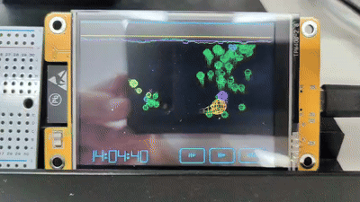

Install the 3D Cyber Ecosystem Simulation directly to your ESP32-2432S028R (CYD).

Connect your CYD board via USB, choose your board type below, select the correct COM port, and click "Install".
Most common CYD boards (Micro-USB or standard USB-C).
Use this if the Standard version shows inverted colors or the screen wraps around horizontally.
Use this if the Standard version works but the colors are inverted (e.g. white background instead of black).
Requires a Web Serial compatible browser (Chrome, Edge, Opera). Firefox is not supported.